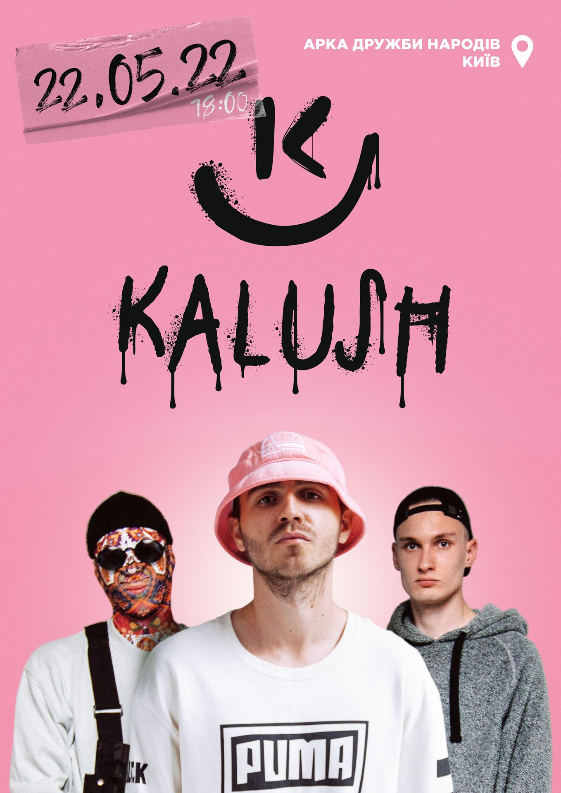

Alyona Alyona, настоящее имя Алёна Олеговна Савраненко (укр. Альона Олегівна Савраненко; род. 14 июня 1991, Капитановка, Кировоградская область, Украина) — украинская хип-хоп- и рэп-исполнительница.
Alyona Alyona, настоящее имя Алёна Олеговна Савраненко (укр. Альона Олегівна Савраненко; род. 14 июня 1991, Капитановка, Кировоградская область, Украина) — украинская хип-хоп- и рэп-исполнительница.
Ве́рка Сердю́чка — сценический образ, в котором выступает украинский артист Андрей Данилко с 1991 года[2]. По словам автора, Верка Сердючка — это арт-персонаж, с помощью которого он рассказывает о себе[3].

Kalush — украинская рэп-группа, основанная в 2019 году. Сайд-проект группы Kalush Orchestra представлял Украину на «Евровидении-2022» и одержал победу в конкурсе.